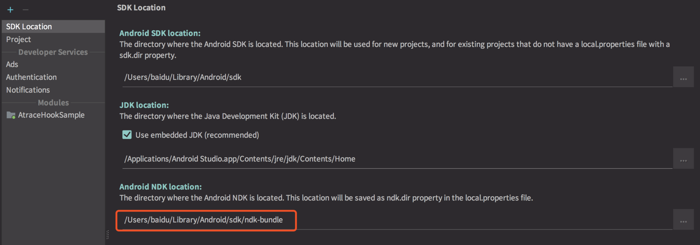
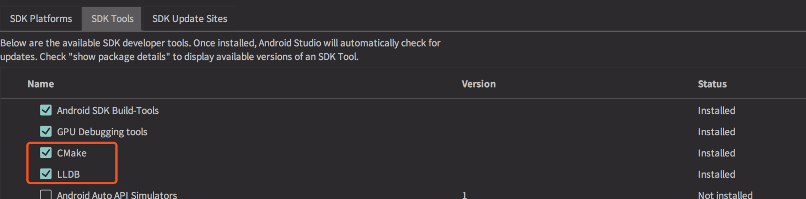
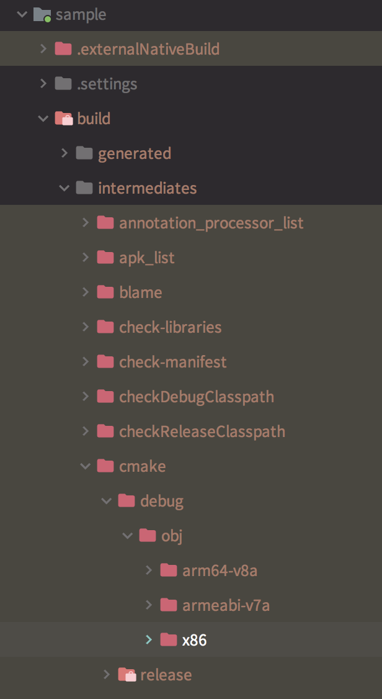
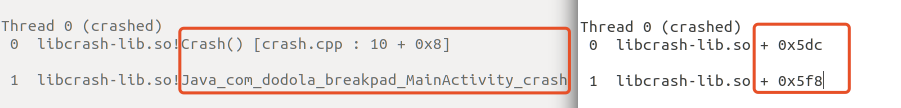
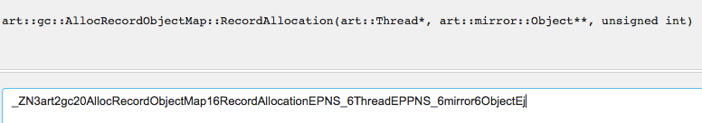

你好，我是专栏的“学习委员”孙鹏飞。
专栏上线以来很多同学反馈，说在运行练习 Sample 的时候遇到问题。由于这些 Sample 多是采用 C/C++ 来完成的，所以在编译运行上会比传统的纯 Java 项目稍微复杂一些。今天我就针对第 1 期～第 4 期中，同学们集中遇到的问题做一期答疑。设置练习的目的，也是希望你在学习完专栏的内容后，可以快速上手试验一下专栏所讲的工具或方法，帮你加快掌握技术的精髓。所以希望各位同学可以多参与进来，有任何问题也可以在留言区给我们反馈，后面我还会不定期针对练习再做答疑。
编译环境配置
首先是同学们问得比较多的运行环境问题。
前几期的练习 Sample 大多是使用 C/C++ 开发的，所以要运行起来需要先配置好 SDK 和 NDK，SDK 我们一般都是配置好的，NDK 环境的配置有一些特殊的地方，一般我们的 Sample 都会使用最新的 NDK 版本，代码可能会使用 C++11/14 的语法进行编写，并且使用 CMake 进行编译，我这里给出 NDK 环境的配置项。
首先需要去 NDK 官网下载最新版本，下载后可以解压到合适的地方，一般 macOS 可以存放在 ANDROID_SDK_HOME/ndk_bundle 目录下，Android Studio 可以默认找到该目录。如果放到别的目录，可能需要自己指定一下。
指定 NDK 目录的方法一般有下面两种。
1. 在练习 Sample 根目录下都会有一个 local.properties 文件，修改其中的 ndk.dir 路径即可。
ndk.dir=/Users/sample/Library/Android/sdk/ndk-bundle sdk.dir=/Users/sample/Library/Android/sdk2. 可以在 Android Studio 里进行配置，打开 File -> Project Structure -> SDK Location 进行修改。

上面两种修改方法效果是一致的。
有些 Sample 需要降级 NDK 编译使用，可能需要下载旧版本的 NDK，可以从官网下载。
之后需要安装 CMake 和 LLDB。
这两项都可以在 Tools > Android > SDK Manager 里进行安装。

这样我们编译所需要的环境就配置好了。
热点问题答疑
关于第 1 期的 Sample，同学们遇到的最多的问题是使用模拟器运行无法获取 Crash 日志的问题。
引起这个问题的缘由比较深层，最直观的原因是使用 Clang 来编译 x86 平台下的 Breakpad 会导致运行出现异常，从而导致无法抓取日志。想要解决这个问题，我们需要先来了解一下 NDK 集成的编译器。
NDK 集成了两套编译器：GCC 和 Clang。从 NDK r11 开始，官方就建议使用 Clang，详情可以看ChangeLog，并且标记 GCC 为 Deprecated，并且从 GCC 4.8 升级到 4.9 以后就不再进行更新了。NDK r13 开始，默认使用 Clang。NDK r16b 以后的版本貌似强制开启 GCC 会引起错误，并将 libc++ 作为默认的 STL，而 NDK r18 干脆就完全删除了 GCC。
由于 Clang 的编译会引起 x86 的 Breakpad 执行异常，所以我们需要切换到 GCC 下进行编译，步骤如下。
1. 首先将 NDK 切换到 r16b，你可以从这里下载，在里面找到对应你操作系统平台的 NDK 版本。
2. 在 Android Studio 里设置 NDK 路径为 ndk-16b 的路径。
3. 在练习例子源码的 sample 和 breakpad-build 的 build.gradle 配置里进行如下配置。
externalNativeBuild { cmake { cppFlags "-std=c++11" arguments "-DANDROID_TOOLCHAIN=gcc" }}第二个问题是日志解析工具如何获取。
解析 Minidump 日志主要是使用minidump_stackwalk工具，配合使用的工具是dump_syms，这个工具可以获取一个 so 文件的符号表。
这两项工具需要通过编译 Breakpad 来获取，有部分同学查到的文章是采用 Chrome 团队的depot_tools来进行工具的源码下载、编译操作。depot_tools 是个很好用的工具，但是在国内其服务器是无法访问的，所以我们采用直接下载源码编译的方式相对来说比较方便。
编译 Breakpad 有一些需要注意的地方，由于 Android 平台的内核是 Linux，Android 里的动态链接库的符号表导出工具dump_syms需要运行在 Linux 下（暂时没有找到交叉编译在别的平台上的办法），所以下面的步骤都是在 Linux 环境（Ubuntu 18.04）下进行的，步骤如下。
1. 先下载源码。
2. 由于源码里没有附带上一些第三方的库，所以现在编译会出现异常，我们需要下载 lss 库到 Breakpad 源码目录 src/third_party 下面。
git clone https://chromium.googlesource.com/linux-syscall-support3. 然后在源码目录下执行。
./configure && makemake install这样我们就可以直接调用minidump_stackwalk、dump_syms工具了。
第三个问题是如何解析抓取下来的 Minidump 日志。
生成的 Crash 信息，如果授予 Sdcard 权限会优先存放在 /sdcard/crashDump 下，便于我们做进一步的分析。反之会放到目录 /data/data/com.dodola.breakpad/files/crashDump 下。
你可以通过 adb pull 命令拉取日志文件。
adb pull /sdcard/crashDump/1. 首先我们需要从产生 Crash 的动态库中提取出符号表，以第 1 期的 Sample 为例，产生 Crash 的动态库 obj 路径在Chapter01/sample/build/intermediates/cmake/debug/obj 下。

此处需要注意一下手机平台，按照运行 Sample 时的平台取出 libcrash-lib.so 库进行符号表的 dump，然后调用 dump_syms 工具获取符号表。
dump_syms libcrash-lib.so > libcrash-lib.so.sym2. 建立符号表目录结构。首先打开刚才生成的 libcrash-lib.so.syms，找到如下编码。
MODULE Linux arm64 322FCC26DA8ED4D7676BD9A174C299630 libcrash-lib.so然后建立如下结构的目录 Symbol/libcrash-lib.so/322FCC26DA8ED4D7676BD9A174C299630/，将 libcrash-lib.so.sym 文件复制到该文件夹中。注意，目录结构不能有错，否则会导致符号表对应失败。
3. 完成上面的步骤后，就可以来解析 Crash 日志了，执行 minidump_stackwalk 命令。
minidump_stackwalk crash.dmp ./Symbol > dump.txt4. 这样我们获取的 crash 日志就会有符号表了，对应一下之前没有符号表时候的日志记录。

5. 如果我们没有原始的 obj，那么需要通过 libcrash-lib.so 的导出符号来进行解析，这里用到的工具是 addr2line 工具，这个工具存放在 $NDK_HOME/toolchains/arm-linux-androideabi-4.9/prebuilt/darwin-x86_64/bin/arm-linux-androideabi-addr2line 下。你要注意一下平台，如果是解析 64 位的动态库，需要使用 aarch64-linux-android-4.9 下的 addr2line（此处是 64 位的）。
aarch64-linux-android-addr2line -f -C -e libcrash-lib.so 0x5f8Java_com_dodola_breakpad_MainActivity_crash6. 可以使用 GDB 来根据 Minidump 调试出问题的动态库，这里就不展开了，你可以参考这里。
针对这一期的 Sample，很多同学询问 Sample 中经常使用的 Hook 框架的原理。
Sample 中使用的 Hook 框架有两种，一种是 Inline Hook 方案（Substrate和HookZz），一种是 PLT Hook 方案（Facebook Hook），这两种方案各有优缺点，根据要实现功能的不同采取不同的框架。
PLT Hook 相对 Inline Hook 的方案要稳定很多，但是它操作的范围只是针对出现在 PLT 表中的动态链接函数，而 Inline Hook 可以 hook 整个 so 里的所有代码。Inline Hook 由于要针对各个平台进行指令修复操作，所以稳定性和兼容性要比 PLT Hook 差很多。
关于 PLT Hook 的内容，你可以看一下《程序员的自我修养：链接、装载与库》这本书，而 Inline Hook 则需要对 ARM、x86 汇编，以及各个平台下的过程调用标准（Procedure Call Standard）有很深入的了解。
第 3 期里，还有部分同学询问 Sample 中的函数符号是如何来的。
首先如果我们要 hook 一个函数，需要知道这个函数的地址。在 Linux 下我们获取函数的地址可以通过dlsym函数来根据名字获取，动态库里的函数名称一般都会通过 Name Mangling 技术来生成一个符号名称（具体细节可以看这篇文章），所以第 3 期的 Sample 里出现了很多经过转换的函数名。
void *hookRecordAllocation26 = ndk_dlsym(handle,"_ZN3art2gc20AllocRecordObjectMap16RecordAllocationEPNS_6ThreadEPNS_6ObjPtrINS_6mirror6ObjectEEEj"); void *hookRecordAllocation24 = ndk_dlsym(handle, "_ZN3art2gc20AllocRecordObjectMap16RecordAllocationEPNS_6ThreadEPPNS_6mirror6ObjectEj");这样的函数可以通过c++filt工具来进行反解，我在这里给你提供一个网页版的解析工具。

我们需要阅读系统源码来寻找 Hook 点，比如第 3 期里 Hook 的方法都是虚拟机内存分配相关的函数。需要注意的一点是，要先确认是否存在该函数的符号，很多时候由于强制 Inline 的函数或者过于短小的函数可能没有对应的符号，这时候就需要使用 objdump、readelf、nm 或者各种 disassembly 工具进行查看，根据类名、函数名查找一下有没有对应的符号。
总结
第 1 期的 Breakpad 的 Sample 主要是展示 Native Crash 的日志如何获取和解读。根据业务的不同，我们平时接触的很多都是 Java 的异常，在业务不断稳定、代码异常处理逐渐完善的情况下，Java 异常的量会逐渐减少，而 Native Crash 的问题会逐步的显现出来。一般比较大型的应用，都会或多或少包含一些 Native 库，比如加密、地图、日志、Push 等模块，由于多方面的原因，这些代码会产生一些异常，我们需要了解 Crash 日志来排查解决，又或者说绕过这些异常，进而提高应用的稳定性。
通过 Breakpad 的源码，以帮你了解到信号捕获、ptrace 的使用、进程 fork/clone 机制、主进程子进程通信、unwind stack、system info 的获取、memory maps info 的获取、symbol 的 dump，以及 symbol 反解等，通过源码我们可以学习到很多东西。
第 2 期的 Sample 提供了解决系统异常的一种思路，使用反射或者代理机制来解决系统代码中的异常。需要说明的是 FinalizerWatchdog 机制并不是系统异常，而是系统的一种防护机制。很多时候我们会遇到一些系统 Framework 的 bug 产生的 Crash，比如很常见的 Toast 异常等，这些异常虽然不属于本应用产生的，但也会影响用户的使用，解决这种异常可以考虑一下这个 Sample 中的思路。
第 3 期的 Sample 描述了一个简单的 Memory Allocation Trace 监控模块，这个模块主要是配合自动性能分析体系来自动发现问题，比如大对象的分配数量监控、分配对象的调用栈分析等。它可以做的事很多，同学们可以根据这个思路，根据自己的业务来开发适合自己的工具。
从第 3 期的 Sample 的代码，你可以学习到 Inline Hook Substrate 框架的使用，使用 ndk_dlopen 来绕过 Android Classloader-Namespace Restriction 机制，以及 C++ 里的线程同步等。
COMMUNITY NOTES
读者评论
非常感谢你们的分享，帮助其他人快速成长，虽然有些地方看不懂，还是会坚持下去，(*^__^*) 嘻嘻……
鹏飞大佬也好厉害
请问下老师，这篇文中提到：5. 如果我们没有原始的 obj，那么需要通过libcrash-lib.so 的导出符号来进行解析。我有以下疑问：这里原始的obj指的是Chapter01/sample/build/intermediates/cmake/debug/obj目录下面的so库吗？什么情况下会变成非原始的呢？
Breakpad 抓取闪退信息后执行DumpCallback后就马上闪退了，怎么和java log 当时堆栈关联起来？
请问下老师:Chapter01/sample/build/intermediates/cmake/debug/obj目录下面的so库，ample/build/intermediates/transforms/mergeJniLibs/debug/0/lib和apk包里的so，这三个so有什么区别呢？还有正式包的so去掉debug info，那aarch64-linux-android-addr2line工具执行之后就没效果了，那正式包怎么看native的crash呢？
gradle文件下，找不到cppFlags和arguments，请问什么原因？
dump_syms 在mac上面怎么生成？这个要在linux下编译才行吗？
dump_syms这个工具在哪里呢？